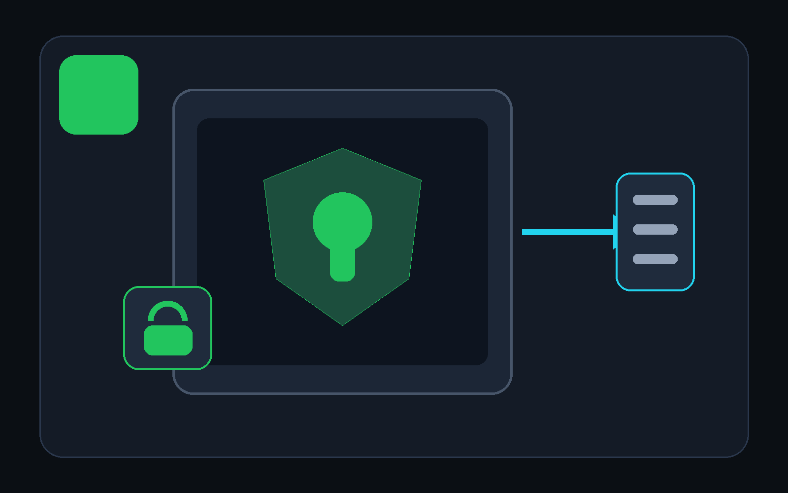

01
Everyday & work
Clear the mental clutter.
Keep tasks, notes, and goals together. Use Personal plan, or choose Business project when meetings and decisions matter.
StartToday · List · Board
Follow the everyday path
Plan a week. Finish an assignment. Build an argument. Ship software. DevDesk turns an ordinary folder into a workspace that starts simple and grows only when your work asks for more.
Windows: available on
Microsoft Store.
Android: available on
Google Play.

project.devdesk. DevDesk recognises the folder and
rebuilds the local workspace.
Pick a starter, see exactly which folders and files it will create, and change your workflow later. A profile is a helpful beginning—not a permanent category.
Keep tasks, notes, and goals together. Use Personal plan, or choose Business project when meetings and decisions matter.
The Study starter creates places for subjects, assignments, notes, and resources. Add due dates when Calendar is useful.
The Research / writing starter creates an outline, research notes, and source notes. Link related Markdown when relationships help.
The Software project starter adds docs, decisions, and API space. File editing, Diff, JSON, OpenAPI, API testing, and scoped Git remain optional.
DevDesk keeps ordinary project files as the source of truth, then gives them useful views, relationships, portability, and optional specialist tools. You can begin without learning Markdown, Git, JSON, or AI.

See the same task, note, goal, meeting, or decision as a list, table, cards, board, calendar, timeline, outline, map, or relationship.

Your content stays in the folder you chose. Open it in another editor, back it up normally, and share only the files you approve.

Add connected Markdown, portable Visual Canvas, JSON, OpenAPI, saved API testing, OKF checks, Diff, and workspace-scoped Git as needed.
Create tasks, notes, goals, assignments, meetings, decisions, outlines, source notes, and drafts. Choose another view when it makes the same work easier to understand.
When a project needs more, open focused tools for Markdown, relationships, Visual Canvas, JSON, OpenAPI, saved API testing, structured-knowledge checks, Diff, or Windows Source Control.
Preview a new workspace, or open an existing folder without writes. Add portable identity only when you choose it.
DevDesk derives views and relationships. Safe project writes stay reviewable, bounded, and conflict-aware.
Open project.devdesk. Local registration and indexes
are rebuilt; protected values and trust stay device-local.
| When your work changes | What DevDesk adds | What remains the source of truth |
|---|---|---|
| A task needs a deadline | Calendar or Timeline can show it | The same task file |
| Notes begin to connect | Relationships and Graph can follow saved links | The same Markdown files |
| A project becomes technical | JSON, OpenAPI, API, Diff, and scoped Git tools become useful | The selected project folder |
| You move to another device | DevDesk rebuilds local registration and indexes | The copied or cloned folder and project.devdesk |
Views are derived from the same workspace content. DevDesk does not create a second cloud copy of the project behind your back.
Read-only indexes can rebuild automatically. Project writes use Manual, Review changes, or bounded Safe automatic mode. Secrets, cookies, execution trust, recents, and personal layout do not belong in portable project files.
Existing paths and external file changes are preserved and reported.
Your selected folder remains the home of the project. Network tools act only when you use them.
Opening a folder does not run Git, scripts, terminals, or project commands. Bounded execution needs a separate local decision.
The Agent Connector is not required for normal DevDesk use. When enabled, an MCP-compatible client can request bounded context from the selected workspace and prepare changes for review inside DevDesk.
DevDesk does not include an AI provider or subscription.
The static DevDesk Support Assistant runs entirely in this website and is ready for GitHub Pages. It searches the published manual, quotes relevant guidance, and links every answer to its source page. No account, API key, or hosted AI service is used.
Watch Codex follow a DevDesk knowledge graph from one task to the relevant brief, architecture, source, and tests. Then download the exact starter workspace and reproduce the review-before-write flow on your own device.
Choose the starter that feels closest, then make it yours. Windows and Android are available now.